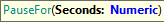
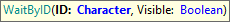
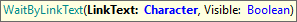
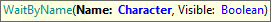
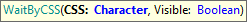
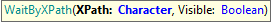

The following functions are intended to handle timing on test automation.
While it is not recommended to use PauseFor (sleep time) on tests, sometimes it could be handy in troubleshooting.

Pauses (sleep) during test execution.
Parameters:
Example of use:
&driver.PauseFor(3)

Waits (explicitly) for a ceirtain HTML element to be present (or visible) on the webpage.
Parameters:
Example of use:
&driver.WaitById("button1", true)

Waits (explicitly) for a link to be present (or visible) on the webpage.
Parameters:
Example of use:
&driver.WaitByLinkText("click here", true)

Waits (explicitly) for a ceirtain HTML element to be present (or visible) on the webpage using the element Name.
Parameters:
Example of use:
&driver.WaitByName("LinksContainer", true)

Waits (explicitly) for a ceirtain HTML element to be present (or visible) on the webpage using the CSS selector.
Parameters:
Example of use:
&driver.WaitByCSS("#button1", true)

Waits (explicitly) for a certain HTML element to be present (or visible) on the webpage using the XPath selector.
Parameters:
Example of use:
&driver.WaitByXPath("//span/input", true)
| Backlinks | |
| GXtest UI Commands - Timeouts | GXtest UI Test for Web - Supported Commands |
| Toc:GXtest v4 |